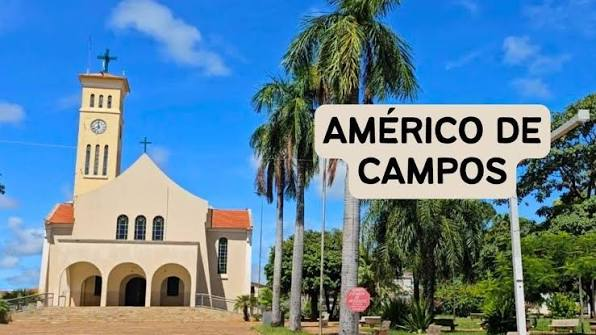

Américo de Campos é um município do estado de São Paulo, fundado no século XX. A cidade recebeu esse nome em homenagem a Américo de Campos, importante figura da região. Seu desenvolvimento esteve ligado à agricultura e à expansão das atividades comerciais. Com o passar dos anos, o município cresceu e se tornou uma comunidade importante da região.
Um dos destaques de Américo de Campos são suas praças e espaços públicos. A cidade também possui a Igreja Matriz, que é um dos pontos de referência locais. As áreas verdes e espaços de convivência são utilizados pelos moradores para lazer. Eventos e festas tradicionais também ajudam a movimentar o turismo local.
Américo de Campos está localizado na região noroeste do estado de São Paulo. O município possui uma população relativamente pequena e clima predominantemente quente. A agricultura tem importância histórica para a economia da cidade. A cidade também mantém tradições culturais e eventos que fazem parte da identidade dos moradores.
